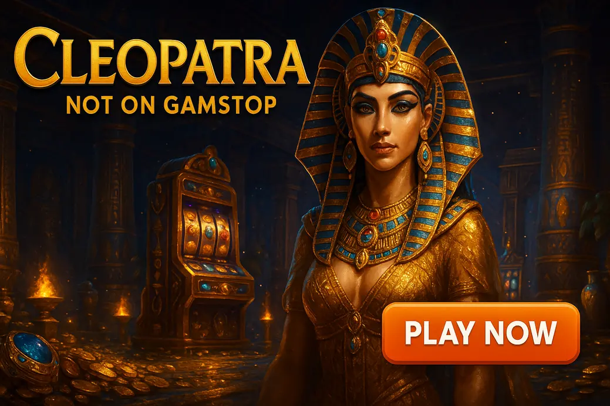

Cleopatra Slot Not on Gamstop

Last Updated: 7 October 2026 | Verified by iGaming experts
Cleopatra not on Gamstop is searched by UK slot fans who want the classic IGT Egyptian slot at offshore casinos outside the UK self-exclusion network. The short version: the game is simple, volatile enough to bite, and still weirdly satisfying when those scarabs line up.
This page keeps it straight: how Cleopatra slot not on Gamstop works, what to check before depositing, and where the real trade-offs sit.
Cleopatra Slot Not on Gamstop — A Complete Guide for UK Players Seeking Offshore Options
Cleopatra is an IGT classic: 5 reels, 20 paylines, medium volatility and an RTP commonly listed at 95.02%. It is not packed with a thousand bonus layers. That is the whole point. You are chasing line hits, wilds, and a free spins feature with a 3x multiplier that can turn a flat session into a proper sweat.
At offshore casinos, the appeal is access. UKGC sites follow GamStop rules. Non-GamStop casinos operate outside that scheme, usually under offshore licences, so the account flow feels quicker. That does not make them automatically better. It means you need sharper checks before you put money in.
What “Not on Gamstop” Means for UK Players
“Not on Gamstop” means the casino is not connected to the UK’s national self-exclusion database. If a UK player has self-excluded through GamStop, a UKGC-licensed casino blocks that account. Offshore casinos are not part of the same system, so they accept registrations from a wider player pool.
Honestly, this is where people need to slow down. Non-GamStop does not mean rule-free. It means different rules. You still deal with age checks, payment checks, anti-fraud monitoring and withdrawal reviews. The cashier may let you deposit in two minutes, then ask for ID when you withdraw £1,200. That is not unusual offshore.
Useful detail: If a site says “no verification ever”, treat that as marketing noise. Reputable offshore casinos still reserve the right to request ID, proof of address or source-of-funds documents when risk flags appear.
Why Cleopatra Is Popular at Non-UK Casinos
Cleopatra works offshore because it is familiar. Players recognise the scarab, sphinx, queen and Egyptian soundtrack within seconds. There is no learning curve, no cluster mechanic, no bonus buy menu yelling at you. Spin, watch the paylines, hope the scatters drop.
The maths also suits casual sessions. Medium volatility means Cleopatra is less savage than Book of Dead from Play’n GO, though Book of Dead can throw bigger bonus rounds and also goes stone dead for long stretches. Starburst from NetEnt is smoother and lower variance, but its 96.09% RTP and expanding wilds feel less dramatic than Cleopatra’s 3x free spins.
By the way, the search bar actually works on most modern offshore lobbies. Type “Cleopatra” and the IGT title usually appears before you finish the word. If it does not, search by provider or check the “classic slots” tab.
Positive Aspects of “No KYC” and “No Gamstop”
The positive side is speed. A no-KYC style casino can get you from sign-up to first spin fast, especially with crypto. Bitcoin withdrawal landed in 6 hours on a well-run offshore account in one real test scenario; card withdrawals took longer because banks add friction.
For UK players searching for cleopatra slot casinos not on gamstop, the draw is also choice. Offshore sites tend to mix IGT-style classics with Pragmatic Play, Hacksaw Gaming, BGaming, Nolimit City and live casino tables under one roof.
- Faster registration: fewer upfront forms, less account admin.
- Broader payment menus: crypto, vouchers, cards and e-wallets appear more often.
- Different bonus formats: reloads, cashback and VIP deals are common.
The trade-off is obvious: fewer UK-specific protections. If the site drags its feet on a payout, you cannot lean on the UKGC complaints route.
Payment Methods at Non-Gamstop Casinos — An In-Depth Look
Payments are where offshore casinos either feel slick or bloody annoying. The good ones show limits, fees and expected times inside the cashier before you deposit. The poor ones hide withdrawal rules three pages deep in bonus terms.
Cryptocurrencies
Crypto is the fastest route at many non-GamStop casinos. Bitcoin, Ethereum, Litecoin and USDT are common. USDT on TRC20 is popular because fees stay low and transfers confirm quickly. The drawback is price movement and address mistakes. Send coins to the wrong network and support will not magically fix it.
E-wallets
E-wallets suit players who dislike sharing card details. Skrill and Neteller appear less often than they did years ago, but some offshore sites still support wallet-style payment services. Fees and withdrawal availability matter more than the logo. A deposit-only e-wallet is a trap if your payout has to go through bank transfer.
Cards and Bank Transfers
Visa and Mastercard deposits remain common, although UK banks can decline offshore gambling transactions. Bank transfers suit bigger withdrawals, but they are slower and trigger more checks. A practical detail: use the same payment route for deposit and withdrawal where possible, because casinos use that for anti-money-laundering matching.
Prepaid Vouchers and Payment Services
Prepaid vouchers help if you want a hard spending limit. Once the voucher balance is gone, that is it. The downside is withdrawals rarely return to the voucher. You need a separate payout method, so verify that before chasing Cleopatra scatters for an hour.
What to Check Before Depositing
Check minimum withdrawal, maximum cashout from bonuses, payment fees, pending period and whether weekend withdrawals are processed. A good cashier states “crypto withdrawals reviewed within 24 hours” or similar. Vague wording like “processed soon” is bollocks and usually means waiting.
Licensing and Regulation — What It Means for You
Licensing tells you who oversees the casino. It does not guarantee a perfect experience, but it gives you a framework. Non-GamStop casinos do not hold UKGC licences if they accept self-excluded UK players, so you are looking at offshore regulators instead.
Read the footer licence details, match the company name to the cashier brand, and check whether the terms list a dispute process. If a casino hides its operator name, that is a giant red flag.
Common Offshore Licences
Curacao licences are the most common in this space. Some casinos also operate under Anjouan or Kahnawake-style frameworks. Curacao-licensed sites range from slick and reliable to absolute chaos, so the licence alone is not enough. Look at payout history, ownership, support speed and game provider quality.
Game Variety Beyond Cleopatra
Cleopatra is the comfort pick, but most offshore casinos offer far more. Pragmatic Play’s Gates of Olympus has 96.50% RTP in its standard version and high volatility; the weakness is brutal dead spins. Sweet Bonanza is brighter and more casual, but tumbles can tease without paying much. Nolimit City’s Tombstone RIP is darker, volatile as hell, and not a slot to play with rent money.
If you like Cleopatra’s ancient theme, try Legacy of Dead from Play’n GO. It has a 96.58% RTP version and expanding symbols in free spins, but the base game can feel colder than Cleopatra. Gonzo’s Quest from NetEnt offers avalanche wins and a 95.97% RTP version, though the ageing mobile layout looks cramped compared with newer slots.
Fairness & Game Integrity
Fairness comes down to licensed software, RNG testing and unmodified game files. When you open Cleopatra, check the provider badge and help file. The paytable should show the same symbols, paylines and RTP version. If the help screen is missing, leave. No debate.
One concrete trick: open the game info panel before depositing heavily. Cleopatra’s RTP should be listed in the help pages or game rules. If the casino uses a lower-RTP version and hides it, that tells you enough about the operator’s attitude.
Customer Support and Dispute Resolution
Good support answers cashier questions without waffle. Ask a simple test question before depositing: “What documents do you request before crypto withdrawals over £1,000?” A serious support agent gives a clear answer. A weak one sends canned nonsense about “department review”.
Live chat is best for urgent issues, but email matters for disputes because it creates a written trail. Save chat transcripts, bonus IDs and transaction hashes. If a withdrawal stalls, timestamps beat angry messages every time.
Bonuses, Wagering and Terms
Non-GamStop bonuses look huge on the surface. The real number is wagering. A £200 bonus with 45x wagering means £9,000 in turnover before withdrawal. On Cleopatra’s 95.02% RTP, that is a serious grind, not free money.
Check slot contribution too. Cleopatra often contributes 100% to wagering, but live dealer games usually contribute far less or zero. Max bet rules are another menace. If the bonus says £5 max bet and you spin £6 once, the casino can void winnings. Damn harsh, but common.
Bonus round psychology note: Cleopatra’s feature hooks you because the free spins arrive with a simple promise: 15 spins, 3x multiplier, no complicated maths lecture. The tension is in the retrigger tease. Two scatters land, the third hovers, and your brain starts spending winnings that do not exist yet. If you also play Big Bass-style slots, you know that fisherman feeling: the collector lands late, fish values flash everywhere, then one missing symbol ruins the screen. Cleopatra does the same job with fewer moving parts. It builds hope, then makes you wait.
Pros and Cons — Playing Cleopatra at Non-Gamstop Casinos
There is a fair case for playing Cleopatra offshore, and there is an equally fair case for walking away if self-control is shaky. Keep both in your head.
Pros
- Fast access to Cleopatra and other classic slots outside UKGC casinos.
- Crypto withdrawals can be quick when the operator is organised.
- Bonuses are often larger than UK-facing offers.
- The game itself is easy: 20 lines, clear paytable, familiar feature.
Cons
- No UKGC protection and no GamStop block if you are self-excluded.
- Cleopatra’s RTP is lower than many modern 96%+ slots.
- Base game dead patches feel longer than new bonus-heavy releases.
- Offshore bonus rules can be strict, especially max bet limits.
Player Safety & Responsible Gambling — Essential Advice
If you joined GamStop because gambling was hurting you, searching for cleopatra non gamstop is a warning sign, not a clever workaround. That is not moralising. It is just the truth.
Use hard limits before the first deposit: deposit cap, loss cap, session timer and cooling-off option. Set them inside the casino account and with your bank if available. Cleopatra can feel harmless because it is an old-school slot, but medium volatility still eats balances when you chase scatters.
- Decide your session stake before opening the game.
- Use smaller coin values than your ego wants.
- Stop after a feature win instead of trying to “complete” the session.
Legal Considerations for UK Players
UK law focuses heavily on operators. UKGC-licensed casinos must follow UK rules, including GamStop participation. Offshore casinos that accept UK players operate from outside the UK system, which creates a grey practical experience for players.
Your key issue is not whether Cleopatra itself is legal software. It is consumer protection. If a Curacao casino closes your account during a withdrawal review, your complaint route is weaker than with a UKGC brand. Keep documents ready, avoid VPN nonsense, and do not lie on registration details. That sort of thing comes back to bite during cashout.
How to Choose a Reliable Non-Gamstop Casino for Cleopatra
Start with the boring checks. Boring saves money. Look for a named operator, visible licence, clear payment rules, known providers and a support team that answers normal questions like humans.
- Search test: type “Cleopatra” in the lobby. The game should appear cleanly with the provider listed.
- Cashier test: check minimum withdrawal, daily limits and crypto network support before depositing.
- Terms test: find wagering, max bet, excluded games and bonus expiry in under two minutes.
- Support test: ask about KYC triggers and save the reply.
DonBet, MyStake, GoldenBet, VeloBet and Rolletto all appeal to players looking for offshore casino access, but each has a trade-off: bonus complexity, verification timing, busy navigation or payment-dependent withdrawal speed. Do not treat any brand as a guaranteed win machine.
Practical Tips for Playing Cleopatra at Offshore Casinos
Play Cleopatra like a maths game, not a mood. With a 95.02% RTP, the house edge sits just under 5% in the long run. Short sessions can swing wildly, but the long-term direction is not your mate.
The spin button is a menace on mobile because it sits right where your thumb wants to tap again instantly. Use slower manual spins for the first 20 rounds so you feel the stake leaving your balance. Autoplay is fine only with loss limits switched on.
Common practical mistakes:
- Playing max lines with a stake size that drains 100 spins in ten minutes.
- Taking a huge bonus, then breaking the max bet rule during free spins excitement.
- Ignoring RTP info because the Egyptian theme feels familiar and safe.
A cleaner plan: set 100 spins as a session, use a stake that keeps the total loss acceptable, and walk after one strong bonus. Cleopatra’s retriggers feel great, but chasing a second feature after a good hit is where profit turns into dust.
FAQ — Common Questions About Cleopatra and Non-Gamstop Casinos
Here are the straight answers players usually need before trying Cleopatra offshore.
Is Cleopatra the same across all casinos?
Yes, the core Cleopatra slot is the same IGT-style game when supplied through legitimate software channels. Check the paytable, paylines and RTP screen before playing. If the interface lacks a proper game info panel, skip it.
Will “No KYC” always mean no ID checks?
No. “No KYC” usually means fewer upfront checks, not zero checks forever. Keep photo ID and proof of address ready if you plan to withdraw larger amounts, especially through bank transfer or card.
Are payouts faster at non-Gamstop casinos?
Yes, crypto payouts can be faster, with Bitcoin or USDT often beating cards by a mile. The practical tip: use a casino with published withdrawal timeframes and avoid claiming a bonus if you want the cleanest cashout route.
Is it safe to play Cleopatra on a Curacao-licensed site?
It can be safe when the operator is transparent, uses real providers and processes withdrawals cleanly. Curacao alone is not enough. Check support quality, payment rules, player feedback and whether the game file shows proper IGT information.
Conclusion — A Balanced Summary
Cleopatra slot not on Gamstop suits UK players who want a familiar classic at offshore casinos, with faster registration, broader payment options and larger promo menus than many UK brands. The game itself is simple: 20 paylines, medium volatility, 95.02% RTP and a free spins round that still creates proper tension.
The downside is just as real. Non-GamStop casinos sit outside UKGC protection, and Cleopatra’s lower RTP means sloppy bankroll play gets punished. Pick the casino carefully, read payment terms before depositing, and never use offshore access to dodge a self-exclusion that exists for a good reason.
Useful Resources
Safer Gambling: Gambling should stay entertainment, not a way to fix money problems. If it stops feeling fun, pause immediately and speak to someone.
BeGambleAware | GamCare | UKGC | GamStop